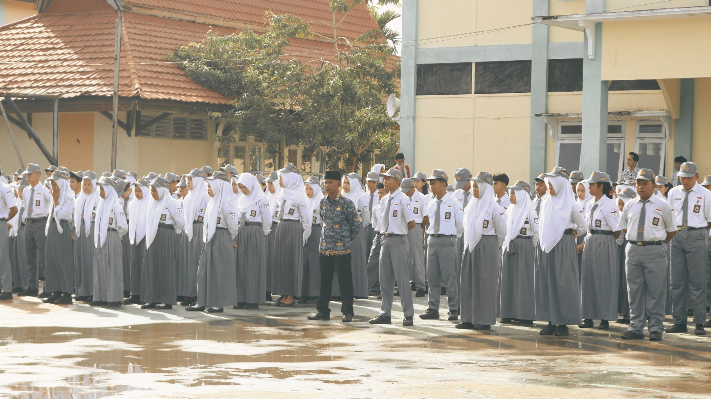

Kegiatan
12 Maret 2026
Admin Sekolah
Semangat MPLS 2026: Menyambut Peserta Didik Baru dengan Budaya Be ProuD
Kegiatan MPLS menjadi langkah awal untuk memperkenalkan lingkungan sekolah, budaya disiplin, dan semangat belajar kepada seluruh peserta didik baru.
Baca Selengkapnya